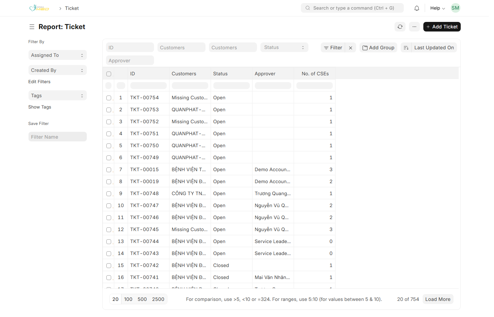
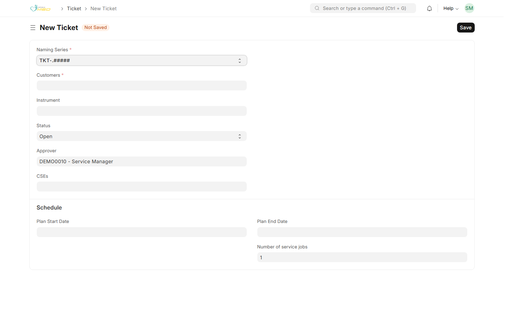
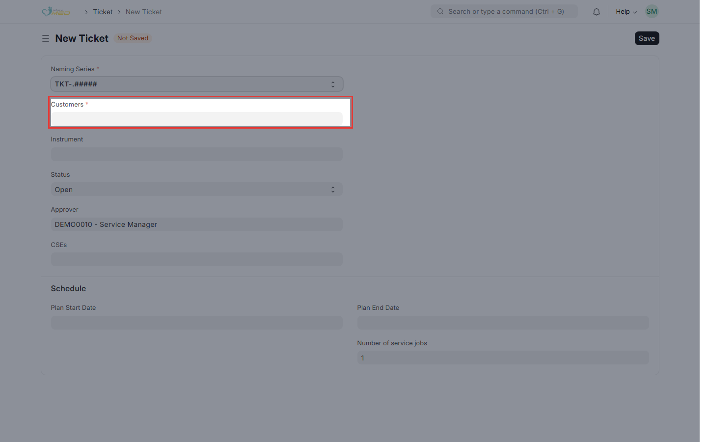

1. Tạo Ticket
Ai thực hiện: iMED Service Manager — tạo và sửa mọi Ticket. iMED Service Leader — chỉ sửa Ticket khi bạn là Approver trên phiếu đó (xem phân quyền). iMED Service User — không tạo/sửa Ticket.
Bước 1.1 — Mở danh sách Ticket
Trên Desk (Ctrl + G), gõ Ticket hoặc mở từ workspace Support. Nhấn + Add Ticket để tạo mới. Ở chế độ Report, danh sách có thể thêm cột No. of CSEs (số CSE gán trên phiếu).

Bước 1.2 — Điền thông tin Ticket
- Naming Series — giữ mặc định TKT-.##### trừ khi quy trình nội bộ quy định khác.
- Customers — chọn một hoặc nhiều cơ sở y tế / khách hàng (bắt buộc ít nhất một).
- Status — Open hoặc Closed.
- Approver — chọn Trưởng nhóm hoặc Quản lý dịch vụ (xem bảng vai trò ở trên).
- CSEs — chọn một hoặc nhiều kỹ sư dịch vụ tham gia ticket; bắt buộc có ít nhất một người.
- Plan Start Date / Plan End Date (khối Schedule) — tùy chọn; khi nhập đủ cả hai, chỉ các job Preventive Maintenance có Plan Start/End Date trên Service Job phải nằm trong phạm vi ngày này (QC, Update deadline, … không bị ràng buộc theo Ticket).
- Number of service jobs — số lần PM dự kiến trong khoảng plan (mặc định 1); dùng cho nút Generate Schedule (xem bước 1.4).


Bước 1.3 — Lưu Ticket
Nhấn Save. Ghi nhớ mã Ticket (ví dụ TKT-00001) — bạn sẽ gắn mã này khi tạo Service Job.
Bước 1.4 — Generate Schedule (Preventive Maintenance)
Hướng dẫn chi tiết 4 bước (Add Ticket → điền trường → Save → Generate): Generate Schedule — Ticket PM.
Dành cho ticket PM có kế hoạch theo năm / nhiều đợt bảo trì. Sau khi Ticket đã lưu, có đủ Plan Start Date, Plan End Date, Number of service jobs (≥ 1), Instrument, ít nhất một Customer và CSEs, và chưa có Service Job loại Preventive Maintenance nào gắn ticket:
- Mở lại Ticket đã lưu.
- Nhấn Generate Schedule trên thanh hành động.
- Hệ thống tạo N Service Job PM (N = Number of service jobs), mỗi job một ngày Plan Start = Plan End trong khoảng plan của Ticket (chia đều theo lịch ERPNext).
- Customer trên mọi job = khách hàng đầu tiên trong danh sách Customers của Ticket. CSEs được copy từ Ticket.